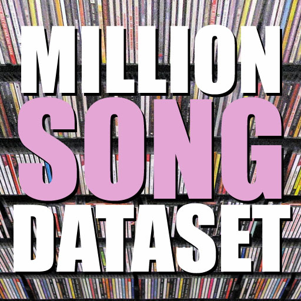

This website demonstrates the results of my capstone project for the Data Incubator Reply. In my project I used the publicly available Million Song Dataset and the database of Last.fm.
The features that I used in the analysis:
Artist Hotness: An index measuring how trendy an artist is,
Artist Familiarity: An index measuring the familiarity of the artist,
Similar Artists Score: Average popularity of similar artists,
Loudness: Loudness in dB,
Tempo: Tempo in BPM(Beats per minute),
Duration: Duration in seconds,
Star Ratings: A discrete measure (1 to 5) of song popularity.
The objective of the project is to build a model that predicts the star rating of a song based on the other features.